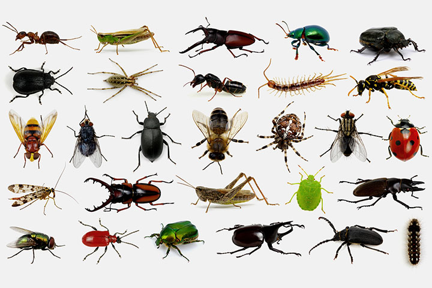

Lab 14 - Debugging
Use debugging knowledge to fix old assignments
Challenges
We didn't have any bugs in old labs that we hadn't already fixed.
Reflection
I think just by trying to do the assignments without any prior debugging knowledge allowed for us to come up with our own techniques for debugging. I'd say the biggest learning point was breaking things down into smaller bits and figuring out how to isolate the issue.